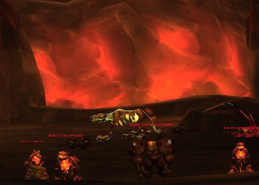

Most characters start off at level one. The current level cap is sixty, so you have quite a way to go before you can enjoy the end-game content. Some people prefer to take their time with leveling, exploring the world around them, and making new friends. Others cannot get to max level fast enough, racing to the end-game so they can partake in current content. In this section, I will highlight some different methods for leveling, and share my preferred route if I am rushing to sixty.
Questing
Most people will level through questing, a method where you run around the world picking up missions that ask you to do different things and share parts of the lore with you. You might be expected to defeat vultures so a poor woman can make soup, or you might receive a quest to run across several zones just to deliver a message. Some of my favorite quests take place in Northrend, where you can joust or ride gryphons into battle.
Dungeons
Depending on your role, as a tank, healer, or damage dealer, you can take advantage of dungeons. Dungeons are made available at level ten, and they have different settings where you must defeat a series of bosses. Running dungeons is better saved if you have a friend or more experienced player with you, as veterans of World of Warcraft know exactly what they are doing in them. They will fly through dungeons, flattening entire armies in only a few minutes. However, as a new player, dungeons are also a fantastic way to learn how to work together with other players and what your class can do. If you are new to a dungeon, make sure to let those you are running with know, so they can tell you what you need to know.
Faster! Faster!
If I am rushing off to reach the end-game, my favorite method will change depending on what side I am on. If I am Alliance, I prefer to quest through Warlords of Draenor or Mists of Pandaria, then finish in Shadowlands. As a member of the Horde, Warlords of Draenor is not a great option. Instead, I will run through Mists of Pandaria or Battle for Azeroth. I might also speed up the process even more by joining dungeons as a tank or healer, as those get faster queues than a lone damage dealer.